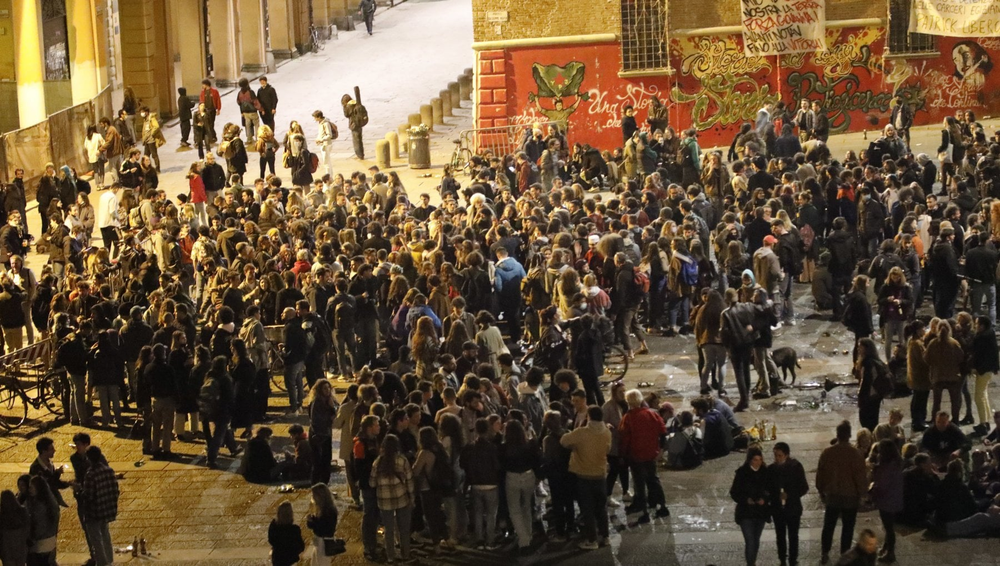

Se stai trascorrendo il weekend a Bologna (magari ad una festa studentesca), ti capiterà, con un'alta percentuale, di ascoltare "Bolo by night" o "Disperato erotico Stomp".
Che chliché, eh?
Lasciateci dire che, nonostante Inoki abbia indottrinato generazioni all'hip-hop, non era solo; così come Lucio Dalla non era l'unico poeta di Piazza maggiore.
Oggi con Zerocammelli: guida a tre alternative musicali anni 90 from Bologna.

JOE CASSANO
Rapper bolo-newyorkese contaminato dalla Big Apple: shake your ass, muovi il c***o sul glass la mia classe come sleep'n guess
MASSIMO VOLUME
Sono come noi: creativi studenti fuori sede che amano la musica e le belle parole. Tra i tanti figli dei CCCP, ma domiciliati a Bologna
DJ RODRIGUEZ
Visionario già attivo negli anni 70, negli anni 80 porta in Italia l'hip-hop, precisamente all'Isola nel Kantiere, CSO in centro a Bologna